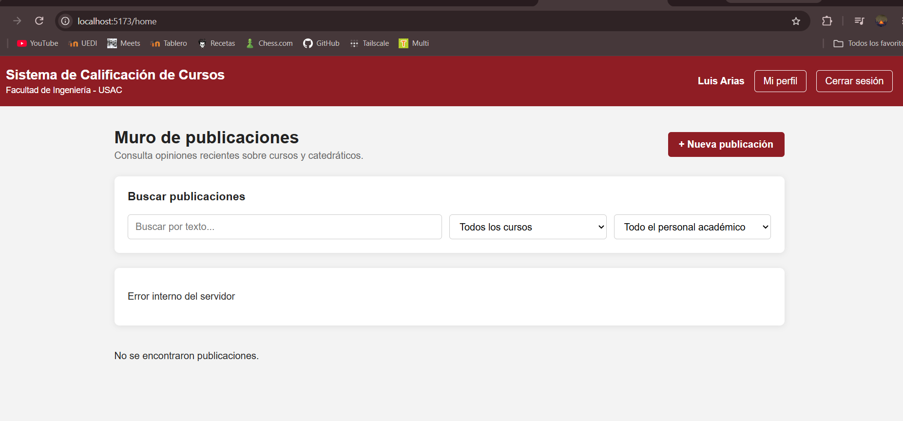

Proyecto del curso Practicas Iniciales

Este proyecto consiste en una plataforma web para estudiantes de la Facultad de Ingeniería de la Universidad de San Carlos de Guatemala. El sistema permite publicar y consultar opiniones sobre cursos, catedráticos y auxiliares, realizar comentarios y utilizar filtros de búsqueda. Además, permite consultar perfiles de estudiantes, registrar cursos aprobados y visualizar el total de créditos obtenidos. La aplicación fue desarrollada utilizando React, Node.js, Express y MySQL.
Documento con la descripción técnica de la estructura y funcionamiento del sistema de la fase 1 - Grupo 17.
Ver ManualDocumento con la descripción técnica de la estructura y funcionamiento del sistema.
Ver ManualDocumento con la guía para utilizar las principales funciones del sistema.
Ver ManualGuia de instalacion y configuracion de Ubuntu con GNU/Linux - Luis Arias.
Ver VideoGuia de conectividad entre sistemas operativos mediante metodo fisico y virtual - Luis Arias.
Ver VideoGuia de instalacion y configuracion de Ubuntu con GNU/Linux - Yessenia Mazariegos.
Ver VideoGuia de conectividad entre sistemas operativos mediante metodo fisico y virtual - Yessenia Mazariegos.
Ver Video